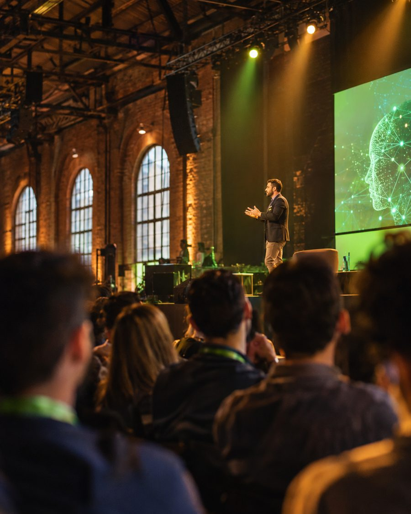
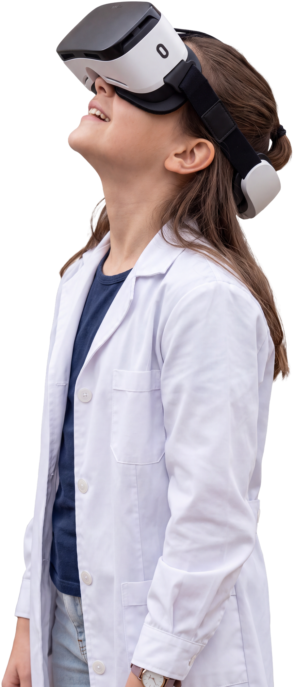
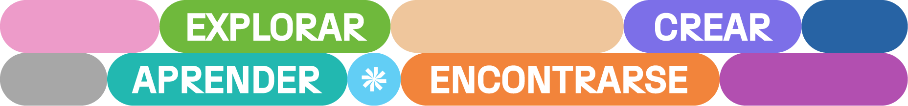
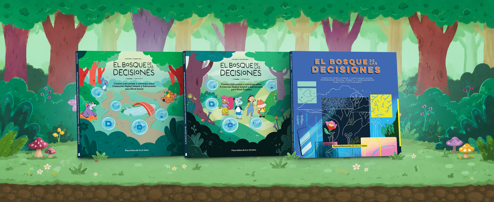
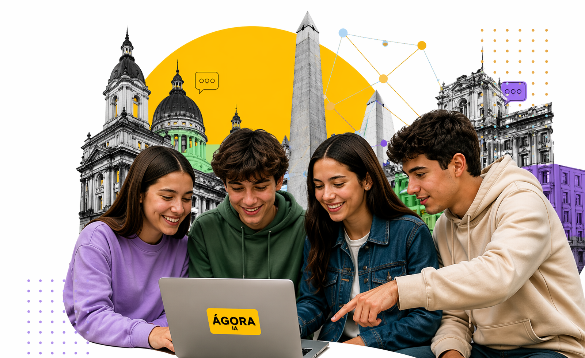

Charlas TEC
Destacados referentes en educación, tecnología e innovación comparten ideas y experiencias para pensar la educación del presente y del futuro.
- Charlas
- Paneles de referentes
- Espacios para aprender
TecWeek ED
Una jornada para imaginar la escuela que viene con la inteligencia artificial como eje central. Gratuita y abierta para docentes de todos los niveles y modalidades.

Faltan
Nos encontramos el 30 de octubre en la Usina del Arte.
Durante la TecWeek ED vas a poder experimentar, formarte, escuchar especialistas, intercambiar con colegas y descubrir nuevas ideas a través de propuestas para toda la comunidad educativa.

Elegí cómo recorrer la jornada: experiencias lúdicas, conversaciones, propuestas para experimentar y espacios de intercambio.
Un espacio lúdico e interactivo para leer, jugar y enfrentar desafíos sobre la vida digital, inspirado en la colección de cuentos El Bosque de las Decisiones. Con propuestas para Nivel Inicial, Primario y Secundario.

Un encuentro para conocer y celebrar proyectos destacados desarrollados por estudiantes de escuelas secundarias de la Ciudad, en torno a las posibilidades de la inteligencia artificial.

Viernes 30 de octubre, de 8 a 18 h.
Usina del Arte, Agustín R. Caffarena 1, barrio de La Boca.
A docentes, estudiantes y toda la comunidad educativa de la Ciudad.
La Tecweek ED es la edición educativa de la Tecweek: Semana de las Tecnologías Emergentes y Creativas, una iniciativa del Gobierno de la Ciudad de Buenos Aires que reúne a los eventos más destacados de la industria tecnológica y creativa del país y del mundo.
Contenido pendiente de completar
A todos los docentes, estudiantes y comunidad educativa de la Ciudad interesados en aprender, pensar y experimentar en torno a temas de educación y tecnologías.
Sí. Completar
Sí. Consultá la agenda aquí.
Sí. El evento incluye propuestas relevantes para docentes de todos los niveles, y también otras diferenciadas para Nivel Inicial, Primario y Secundario.
Sí. Bienestar TEC ofrece un espacio para hacer una pausa, descansar y encontrarse con colegas.
Contenido pendiente de completar.
Contenido pendiente de completar.